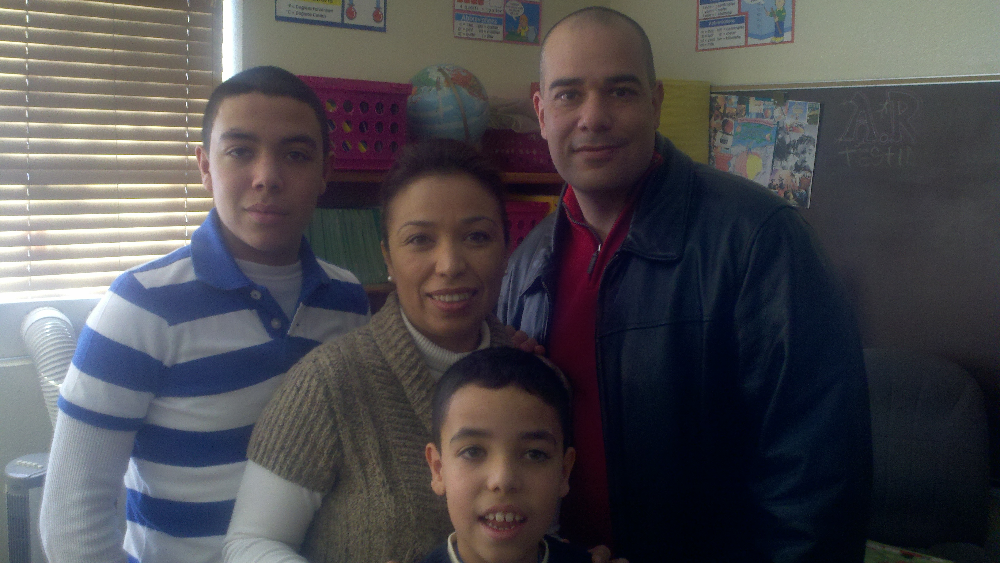
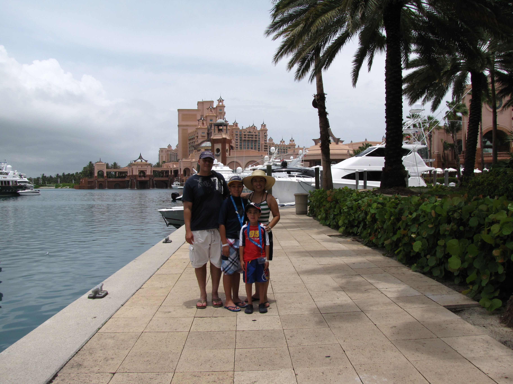

I was born in Panarma City, CA. I graduated from Calexico City, CA. I enlisted in the army October of 1994 as a Calvary Scout.
My initial duty station was Fort Knox, KY. My next duty station was Fort Irwin, CA where I was trained as a observer control and test fielded the first 21st Future Soldier. I changed my carrier field to PATRIOT System Repairer in 1998. I was selected to become an instructor at Fort Bliss, TX. I worked as NCOIC of an Intermediate Support Element at Fort Bliss, TX. I was DA selected to become a U.S. Recruiter and was assigned to Phoenix, Battalion, Center (South Side) Station in Tucson AZ.
My awards and decorations include the Meritorious Service Medal, Army Commendation Medal, Iraqi Freedom Medal, Army Good Conduct Medal, National Defense Medals, Korean Defense Service Medal, Non Commissioned Officers Professional Development Ribbons, Army Service Ribbon, Overseas Service Ribbons, a Global War on Terrorism medal Expeditionary Medal, A Global War on Terrorism Service Medal, and A Gold Recruiting Badge with 3 Safire�s.
I have been married to my wonderful wife, Claudia for over 22yrs, and have two children, Danny and Christopher.
The video above shows what a 94S does in the ARMY. I have been working in this field for the last 17 years.
In contrast the picture below shows what I would like to do for the next part of my life after retiring from the military.
